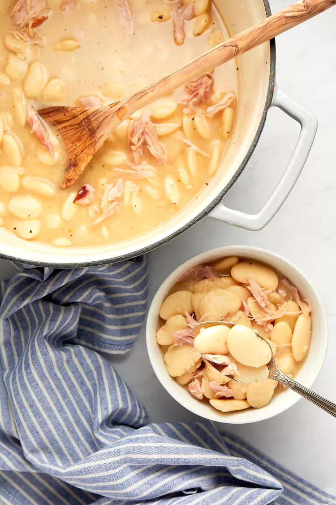

Ingredients
1 pound dry large lima beans
1/2 large white onion, chopped (about 1 1/2 cups)
4 cloves garlic, finely chopped
1 tablespoon garlic powder
1/2 teaspoon black pepper
2 teaspoons salt
1 teaspoon black pepper
1 bay leaf
2 smoked turkey wings
8 cups chicken stock (preferably unsalted or low-sodium)
Additional salt and pepper to taste
Pick over the dry beans:
Pick over the beans, removing any dirt or debris. Rinse the beans in a colander; drain.
Lima Beans in a Colander for Southern Lima Beans Recipe
Cook the beans:
Place the beans, onion, garlic cloves, garlic powder, onion powder, salt, black pepper, bay leaf, and turkey wings in a large Dutch oven or pot.
Add the stock. Bring to a boil over medium-high heat.
Once it starts to boil, decrease the heat to medium-low. Cover with a lid.
Simmer for up to 2 hours or until the beans are tender to your liking. Make sure to stir the mixture a few times while cooking for a creamier sauce.
Pick the meat from the turkey wings:
Using tongs, remove the turkey wings and let them cool until you can comfortably handle them. Remove the cooked meat from the bones using a fork and shred; discard the skin. Place the meat back in the pot.
Remove the bay leaf; discard.
Season and serve:
Taste the beans and season with additional salt and pepper, if needed.
Serve warm.